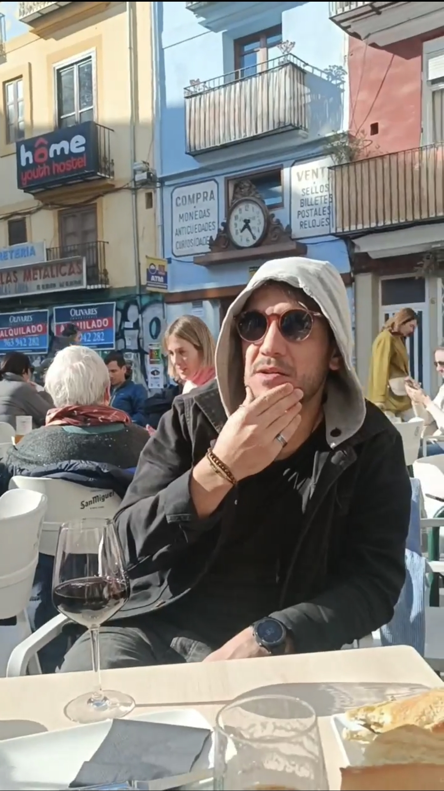

Professional Profiles

DIEGO COELHO MARCOS
| Not Following the sun | Nomadic Life Mode |
| A practicer of the art of being grateful, impermanent and forgiven |
| Portuguese/Galego/Spanish/Englisch und a bissen Deutsche... |
𓅮𓅯𓅰𓅧
__
"I'm sorry
Please forgive me
Thank u
I Love u"
__
"be Humble
stay Hungry
always Hustle"
__
"Quod obstat viae, fit via"
__
"शून्यता 道"
.
.
.
"सि द् ध र्थ"
__
🪶 🪬🪶